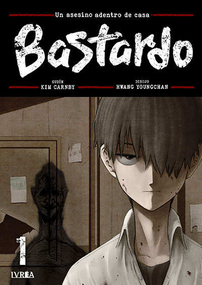

Bastardo
Género: Terror, Suspenso
Seon Jin es un estudiante de secundaria frágil y callado que vive bajo la sombra de su padre, un exitoso y carismático empresario que oculta un secreto aterrador: es un despiadado asesino en serie. Para sobrevivir, Jin es obligado a actuar como el cómplice silencioso de su padre, pero su retorcido mundo colapsa cuando la próxima víctima elegida es la chica nueva de la escuela, la única que ha sido amable con él.
⭐⭐⭐⭐⭐